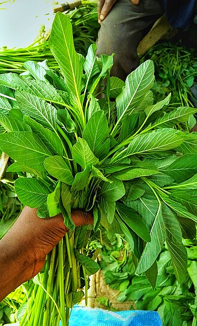

ホウレンソウの生産量 都道府県ランキング
全33県の順位と、とれた量
ホウレンソウが日本でいちばん多くとれるのは群馬県です。2万2,600 tで、全国（18万9,900 t）の12%を占めます。

| 順位 | 都道府県 | 収穫量 | 全国に占める割合 |
|---|---|---|---|
| 1位 | 群馬県 | 2万2,600 t | 12% |
| 2位 | 埼玉県 | 1万9,600 t | 10% |
| 3位 | 千葉県 | 1万8,600 t | 9.8% |
| 4位 | 茨城県 | 1万8,200 t | 9.6% |
| 5位 | 宮崎県 | 1万1,100 t | 5.8% |
| 6位 | 岐阜県 | 8,990 t | 4.7% |
| 7位 | 福岡県 | 7,210 t | 3.8% |
| 8位 | 神奈川県 | 6,700 t | 3.5% |
| 9位 | 熊本県 | 5,320 t | 2.8% |
| 10位 | 栃木県 | 5,170 t | 2.7% |
| 11位 | 京都府 | 4,610 t | 2.4% |
| 12位 | 東京都 | 3,990 t | 2.1% |
| 13位 | 広島県 | 3,770 t | 2.0% |
| 14位 | 静岡県 | 3,740 t | 2.0% |
| 15位 | 愛知県 | 3,640 t | 1.9% |
| 16位 | 北海道 | 3,320 t | 1.7% |
| 17位 | 長野県 | 3,090 t | 1.6% |
| 18位 | 奈良県 | 2,860 t | 1.5% |
| 19位 | 福島県 | 2,670 t | 1.4% |
| 20位 | 宮城県 | 2,600 t | 1.4% |
| 21位 | 岩手県 | 2,400 t | 1.3% |
| 22位 | 兵庫県 | 2,310 t | 1.2% |
| 23位 | 徳島県 | 2,190 t | 1.2% |
| 24位 | 山口県 | 1,620 t | 0.9% |
| 25位 | 秋田県 | 1,330 t | 0.7% |
| 26位 | 長崎県 | 1,260 t | 0.7% |
| 27位 | 滋賀県 | 1,020 t | 0.5% |
| 28位 | 鳥取県 | 983 t | 0.5% |
| 29位 | 佐賀県 | 887 t | 0.5% |
| 30位 | 愛媛県 | 848 t | 0.4% |
| 31位 | 和歌山県 | 719 t | 0.4% |
| 32位 | 福井県 | 577 t | 0.3% |
| 33位 | 富山県 | 337 t | 0.2% |
ホウレンソウの生産量の推移（令和2年産〜令和6年産）
全国の収穫量は、令和2年産の21万3,900 tから令和6年産の18万9,900 tへ、11%減りました。1位は入れ替わっています（令和2年産は埼玉県、令和4年産は群馬県）。
| 年 | 全国 | 1位 | 2位 | 3位 |
|---|---|---|---|---|
| 令和6年産 | 18万9,900 t | 群馬県2万2,600 t | 埼玉県1万9,600 t | 千葉県1万8,600 t |
| 令和5年産 | 20万6,800 t | 群馬県2万2,400 t | 埼玉県2万500 t | 千葉県2万100 t |
| 令和4年産 | 20万9,800 t | 群馬県2万2,300 t | 埼玉県2万1,800 t | 千葉県2万700 t |
| 令和3年産 | 21万500 t | 埼玉県2万2,800 t | 群馬県2万1,500 t | 千葉県1万8,500 t |
| 令和2年産 | 21万3,900 t | 埼玉県2万2,700 t | 群馬県2万2,400 t | 千葉県1万9,400 t |
この数字について
- 分類：ヒユ科
- 全国の収穫量：18万9,900 t
- この数字が表すもの：収穫量（畑や田でとれた重さ）
- 調査：作物統計調査 作況調査（野菜） 令和6年産
- 33県分を調査（調査していない県は順位に入りません）
ホウレンソウの生産量について、よくある質問
- ホウレンソウの生産量が日本一の都道府県はどこですか？
- 群馬県です。作物統計調査 作況調査（野菜）（令和6年産）で2万2,600 tでした。
- ホウレンソウの生産量ランキング2位・3位はどこですか？
- 2位は埼玉県（1万9,600 t）、3位は千葉県（1万8,600 t）です。
- ホウレンソウの生産量ランキング4位・5位はどこですか？
- 4位は茨城県（1万8,200 t）、5位は宮崎県（1万1,100 t）です。ホウレンソウの全33県の順位は上の表のとおりです。
- ホウレンソウの全国の生産量はどれくらいですか？
- 18万9,900 t（令和6年産）です。